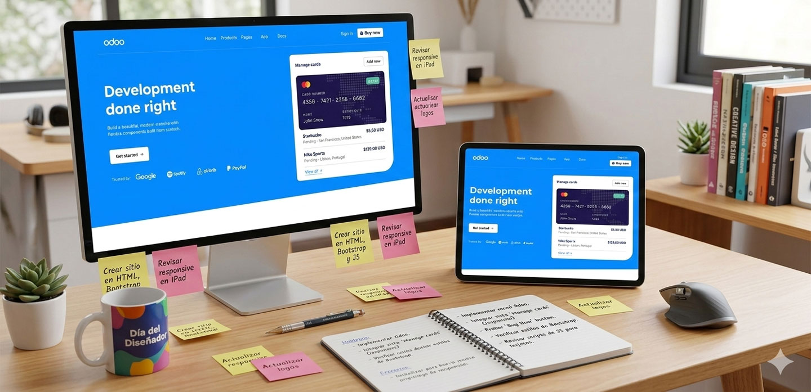

Construcción de Sitio con HTML, CSS, Bootstrap y JS
Proyecto técnico enfocado en maquetación front-end a partir de un diseño entregado como prueba técnica.
Este proyecto consistió en construir un sitio web a partir de un diseño entregado por el equipo de desarrollo como prueba técnica, aplicando código HTML, CSS puro y Bootstrap para lograr un resultado limpio, responsivo y funcional.
Front-End Developer
HTML / CSS / Bootstrap / JS
2024

Contexto
La iniciativa surgió como una prueba técnica para evaluar habilidades reales de maquetación web con tecnologías front-end fundamentales.
Se entregó un diseño estático que debía convertirse en un sitio funcional, respetando estructura visual, estilos y comportamiento esperado.
El objetivo era demostrar:
- ✔ Capacidad de traducir un diseño visual a código funcional.
- ✔ Dominio de HTML semántico.
- ✔ Uso correcto de CSS y utilidades de Bootstrap.
- ✔ Integración de JavaScript para interacción cuando fue necesario.
El Reto
La tarea principal fue construir el sitio fiel al diseño entregado, respetando:
- ✔ Estructura visual definida en el mockup.
- ✔ Uso de HTML y CSS vanilla para estilos personalizados.
- ✔ Integración de Bootstrap (v4.6.x) para responsividad.
- ✔ Visualización correcta en viewports iguales o mayores a 992px.
- ✔ Mantener código limpio y modular
El proyecto exigía precisión visual y correcta implementación técnica.
Implementación Técnica
El proceso incluyó:
Maquetación desde cero
Se construyó una base semántica clara utilizando etiquetas estructurales adecuadas, asegurando orden jerárquico y buena legibilidad.
CSS Personalizado
Se desarrollaron estilos específicos para replicar fielmente el diseño, manteniendo organización y separación lógica de reglas.
Bootstrap para responsividad
Se utilizaron utilidades y sistema de grid para garantizar una correcta visualización en dispositivos desktop, optimizando tiempos de desarrollo sin sacrificar control visual.
JavaScript
Se integraron pequeñas funcionalidades para interacción y comportamiento dinámico cuando fue necesario.
Resultado
El sitio fue implementado con éxito y puede visualizarse en vivo 👉 aqui
Los resultados alcanzados:
- ✔ Sitio construido a partir de un diseño sin depender de frameworks pesados
- ✔ Código organizado y estructurado
- ✔ Maquetación responsiva para viewports ≥992px
- ✔ Uso eficiente de Bootstrap junto a CSS vanilla
El proyecto consolidó habilidades técnicas en desarrollo front-end, demostrando capacidad para convertir diseño estático en experiencia web funcional.
Conclusión
Este proyecto representó una validación técnica sólida en maquetación front-end.
Demostró dominio de HTML semántico, control de estilos con CSS personalizado y uso estratégico de Bootstrap para desarrollo eficiente.
Una consolidación práctica de habilidades fundamentales en desarrollo web.